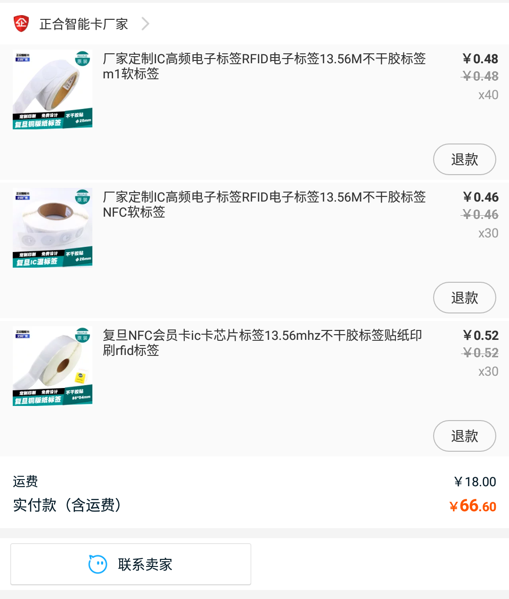

把 NFC 标签放进 Bio Card

哈 好久没有写博客了
分享一个很久以前有弄出来的点子: 把 NFC 标签放进 Bio Card 中
这个点子的来源呢，跟游戏一点关系都没有。
学校网络机房安装了门禁系统，而门禁系统支持刷卡验证。。。
然后。。。然后我就买了一堆白卡玩
后来觉得白卡太丑，于是乎想到了 Bio Card
于是乎脑残一样的把两张 Bio Card 粘在了白卡两边(此处应有个捂脸表情)，这效果并不好。。。
然后在华强宝上发现了这个东西👇

NFC 标签，很薄，功能和白卡的功能一样，当然也可以写很多其他的数据。
但是…制作呢，似乎就不能找厂家做了，手工吧
下面是制作过程咯
第一次尝试
直接把 Bio Card 打印在普通 A4 纸上，然后把纸叠的厚一点，把 NFC标签放进去，用胶棒粘好每一层，然而做出来的效果。。巨烂。。。似乎用胶棒干这个不太好。。。会把纸弄潮。。。然后就。。弯了
第二次尝试
买卡纸咯，直接打印在卡纸上
结果。。。喵了个咪的喷墨打印机的墨怎么这么难干啊！
第三次尝试
打印在普通 A4 纸上，然后粘到卡纸上
效果好多啦，就是胶不太好抹
然后我就买了一包自带背胶的纸，问题解决。
数据写入部分
用途一: 对方刷一下就可以看到你写入的数据
你大概需要一个有 NFC 功能的手机和一个叫 "NFC Tools"的软件(应用包名 com.wakdev.wdnfc )
它可以写入各种类型的数据，比如
- 链接(用手机刷一下就能打开)
- 联系人(用手机刷一下就能加联系人)
- Wi-Fi 接入点信息(用手机刷一下就能接上)
- 然后还有一堆就不在这里列了
然后还可以设置密码使标签变成只读防止恶意修改
用途二: 做门禁卡
一般普通的门禁控制器只会验证卡序列号，也就是 0扇区 的部分数据，如果不是。。。大概就不用往下看了。。
如果你可以在门禁控制器上操作，可以直接拿做好的 Bio Card 当白卡用，录入即可( CPU卡大概不行 )
不行的话…市面上大概没有支持修改0扇区的NFC标签，你大概需要买一些 UID/CUID 白卡，然后把芯片和线圈无损的弄出来，或许也可以用两张 Bio Card 夹着白卡。。。
注: UID白卡大概需要专用的写卡器来修改0扇区，而大部分手机都可以修改CUID卡的0扇区数据
这里有个视频 https://t.me/mdzzmdzz/850
用途三: 飞着玩
您好，请挂机
然后…我大概就讲完了…大概还会继续更新and补图
欢迎评论～
再然后…这似乎是我字最多的一篇博文…？
本文使用 CC BY-NC-SA 3.0 中国大陆 协议许可
具体请参见 知识共享协议
本文链接：https://blog.asec01.net/biocard-with-rfid-tag/